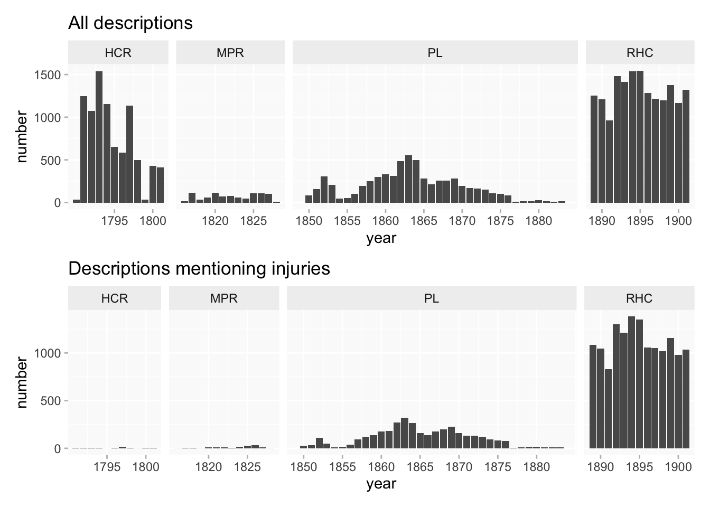
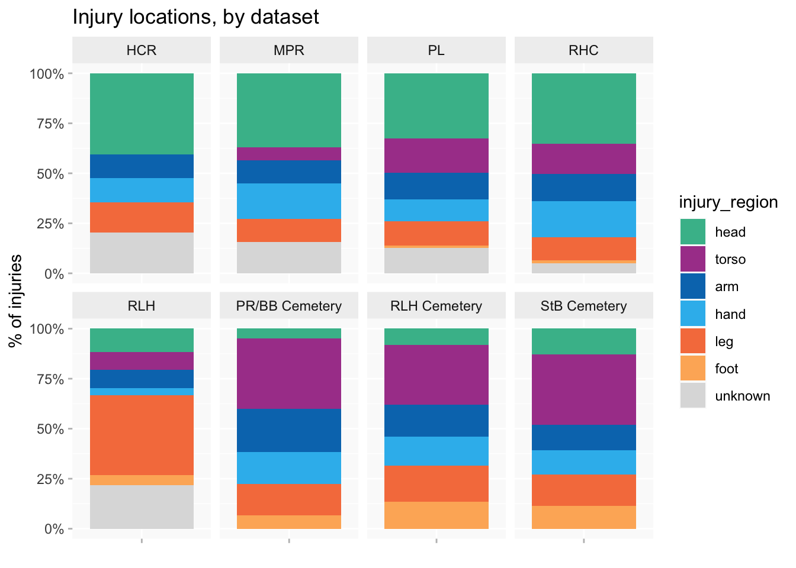

A first look at the Skin and Bone data
Some early exploratory visualisations at the project’s advisory board meeting in May 2023
Introduction
The brief for the meeting was mainly to think about
- characteristics of the three data collections
- differences between the collections and what might be comparable
- shared demographic data across collections - ie gender/sex and age - plus injury locations and types
Note: this post uses final versions of data rather than the slightly provisional version at the time of the meeting, but that makes only a few very minor differences to results.
Osteological data
- fine-grained, systematically recorded data covering range of adult population
- but only injuries (and other information) that can be observed on the skeleton itself
- limited background data (eg, no precise dates)
- age groups are very broad
Skeletons: sex and injuries
I like waffle charts for comparisons, as long as there aren’t too many different values.
Having said that coverage is broad, gender is still not balanced (overall about 42% of skeletons for which sex could be determined [which is about 85% of skeletons]) so it’s not whole population - and highly variable between the three cemeteries.
There is a very consistent correlation between female sex and lower % of skeletons with injuries.
Skeletons: mapping injuries
It’s straightforward to assign broad body location regions across datasets for comparisons (less so for more detailed locations). But injury categories are much more diverse between datasets.
Skeletons are virtually all fractures, with a few variations on different parts of the body: knocks on the head, leg/arm/spinal muscle injuries.
Royal London Hospital
An early version of the data for all three hospitals was available, but I’d only done analysis of Royal London at this point as the most detailed dataset (shouldn’t assume it will be the same as other hospitals).
- unique data on length of hospital stay and outcomes
- but hospital data only records injuries that were severe enough to necessitate hospitalisation
- and descriptions only record the injuries that occasioned hospitalisation
- no “uninjured” population for comparison
RLH: age groups and injury categories
Used these particular age groups to match the groups in the skeletons data.
More diverse range of injuries than in skeletons; noted higher proprotion of burns among children and fractures among older patients.
RLH: injury locations and categories
Some interesting variations: knocks on the head again; fractures are mainly ribs, followed by arms and legs.
RLH: outcomes and gender
You can pack a lot of information into a mosaic chart - shows proportions of categories as well as of outcomes.
More detailed injury categories this time. “fracture+”= compound fractures - can see there’s a big difference in outcomes compared to simple fractures.
Compound fractures and burns were far more lethal than any other categories. Can also see association of female patients with burns and somewhat more likely than men to die, suggesting tended to be more severe cases.
Digital Panopticon
- may have highly detailed physical descriptions (and could even be repeated for the same individual over time)
- considerable amounts of background and demographic information are available from the same sources or via DP linkage
- prisoners and “habitual” convicts only
DP: chronology
There are actually several different datasets within the DP collection, spanning more than a century. Chronologically there’s very little overlap between them (and I removed the few years’ overlap for convenience here).
There are huge differences in numbers, but also big differences in numbers (and also proportions) of datasets that included physical descriptions. That makes comparisons difficult.

DP: what is changing?
Proportional bar chart shows changing percentage of descriptions that mention injuries more clearly. But it’s not actually recording changing likelihood of having injuries. It’s really showing increasing state surveillance of criminals’ bodies over the course of the nineteenth century.
DP: gender
Women are always substantially outnumbered in criminal data, but exact proportions can vary.
Comparison of injured vs uninjured, as with skeletons, shows lower % of women have injuries.
Comparison: location of injuries
What might be compared across the three collections?
Finish with comparison of body regions across DP, skeletons and RLH to show just how much difference there is.
DP - higher % head (skull, face). Closer inspection shows a lot of these are relatively superficial injuries that wouldn’t appear in the other two collections, like facial scars, missing teeth, scarred eyebrows.
RLH - predominance of broken legs
Skeletons - a lot more rib injuries (in fact this is aggregated per person and would be even higher if I counted every individual rib injury). Curious there are so few mentions in the other datasets.
